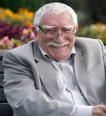

Արմեն Ջիգարխանյան
Կենսագրություն
Արմեն Բորիսի Ջիգարխանյանը ծնվել է 1935 թվականի հոկտեմբերի 3-ին, Երևանում։ Նրա նախնիները սերում էին թիֆլիսահայ հնագույն սերնդից։ Հայրը՝ Բորիս Ջիգարխանյանը, լքել էր ընտանիքը, երբ Արմենը մեկ ամսական էր։ Դաստիարակվել է խորթ հոր կողմից, ում հետ ձևավորվել էին ջերմ հարաբերություններ։ Մայրը՝ Ելենա Վասիլևնան, եղել է մոլի թատերասեր։ Արմենը մեծացել է ռուսալեզու միջավայրում, սակայն նույն ջանասիրությամբ յուրացրել է ինչպես հայկական, այնպես էլ ռուսական մշակույթները։
Դպրոցն ավարտելուց հետո (1952 թ․) փորձել է ընդունվել ԳԻՏԻՍ, սակայն մերժվել է։ Վերադառնալով Երևան՝ աշխատել է «Հայֆիլմ»-ում որպես օպերատորի օգնական։ 1954 թվականին ընդունվել է Երևանի գեղարվեստա-թատերական ինստիտուտ։ Նրա բեմական առաջին դեբյուտը կայացել է 1955 թվականին՝ Կ. Ստանիսլավսկու անվան ռուսական թատրոնում։ Այդ թատրոնում աշխատել է ավելի քան 10 տարի։
1967 թվականին դերասանը տեղափոխվում է Մոսկվա՝ աշխատելով տարբեր թատրոններում, այդ թվում՝ Մայակովսկու անվան թատրոնում, որտեղ խաղացել է Սթենլի Կովալսկու, Սոկրատի, Խլուդովի դերերը։ 1996 թվականին հիմնում է սեփական՝ Մոսկվայի դրամատիկական թատրոնը, որը կրում է իր անունը։
Ջիգարխանյանի կինոդեբյուտը տեղի է ունեցել 1960 թվականին՝ «Փլուզում» ֆիլմում։ Համազգային ճանաչում ստացավ Ֆրունզե Դովլաթյանի «Բարև, ես եմ» ֆիլմից հետո։ Դերասանը հայտնի է ավելի քան 250 դերակատարումներով՝ դարձնելով նրան Գինեսի ռեկորդակիր որպես ամենաշատ նկարահանվող ռուս դերասան։
Նրա կերպարները ընդգրկել են տարբեր ժանրեր՝ դրամա, կոմեդիա, արկածային և պատմական ֆիլմեր։ Հիշարժան են նրա դերակատարումները «Երբ գալիս է սեպտեմբերը», «Տրեստ օպերացիան», «Հանդիպման վայրը փոխել չի կարելի» ֆիլմերում։
Արմեն Ջիգարխանյանը արժանացել է բազմաթիվ պետական և միջազգային պարգևների, այդ թվում՝ ԽՍՀՄ Ժողովրդական դերասանի կոչման, «Հայրենիքի հանդեպ ծառայության» շքանշանի տարբեր աստիճանների, «Ոսկե դիմակ» և «Ոսկե արծիվ» մրցանակների։ Նա եղել է Երևանի պատվավոր քաղաքացի, ինչպես նաև արժանացել է Ցարսկոսելսկի գեղարվեստական մրցանակի։